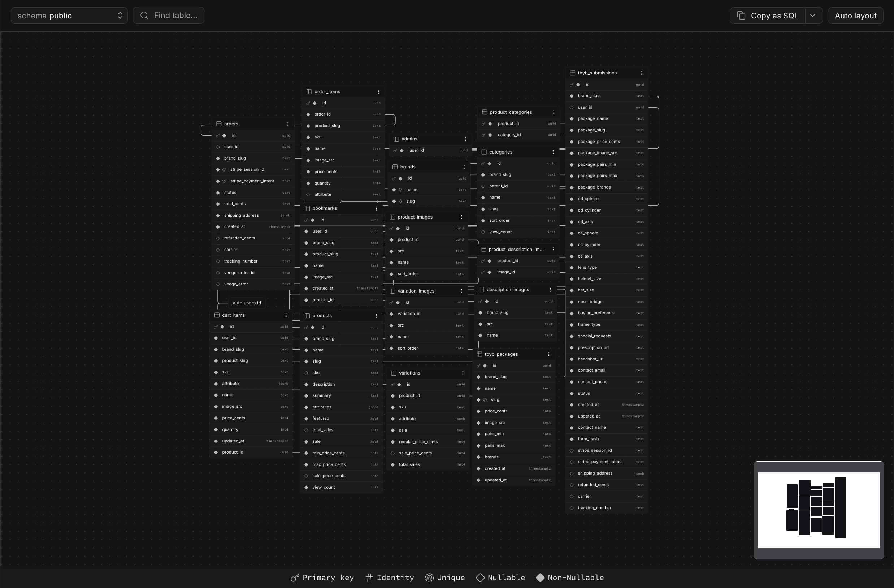
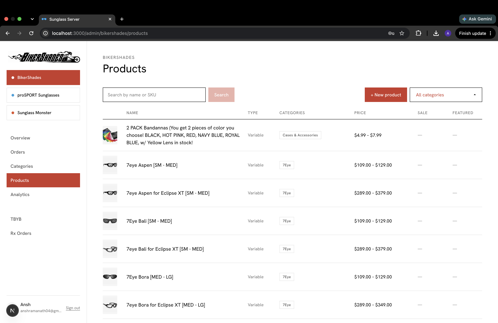

Data migration and the SKU forensics problem
Did
Built a pipeline that pulled ~1,650 products off three legacy WooCommerce stores and audited every field against multiple sources — WooCommerce, Veeqo, the new database — to establish which one was authoritative for each piece of data. The pipeline is crash-safe end to end: checkpoints after every variation, resumable by diffing what is already saved, and atomic writes so a kill mid-json.dump() can’t leave a corrupted checkpoint.
From the notes
BikerShades variation SKUs follow a {modelBase}-{frameColor}-{lensType}-{strength?}-{suffix?} pattern, while parent SKUs carry WooCommerce dedupe junk (-0, -0-XT, -Master-MFB, -COMBOS) that must never be used to derive the real product SKU — deriving from the parent produced 200+ false duplicate flags. WooCommerce also groups genuinely different products under one listing: polarized (CAPL) versus non-polarized (CA), old versus revised SKUs. A “base SKU mismatch” check caught those, then immediately over-flagged legitimate combo products, where a single leading C is meaningful.
CPR29X36ST vs PR29X36ST -> same family (combo prefix) CAPL... vs CA... -> different products one normalization rule for a single leading "C": +12 products, +437 variations recovered
Veeqo was evaluated as a data source and rejected as one: coverage was ~99% for BikerShades, ~98% for Monster, but only ~10% for ProSport; qty_on_hand was populated on ~8% of rows, and there were 431 duplicate SKU rows with 162 genuine price conflicts. It became a gating check — is this SKU in active inventory? — and never an enrichment source. Items whose SKUs were absent from Veeqo entirely were flagged and excluded, overwhelmingly high-diopter bifocals and readers that had never been synced to marketplace inventory.
The two lines the notes state twice, independently: the project started as “migrate WooCommerce” and became “determine the authoritative source of truth for every piece of product data” — and WooCommerce’s only truly trustworthy artifact turned out to be SKUs, not the product data around them.

brand_slug on every relevant table.